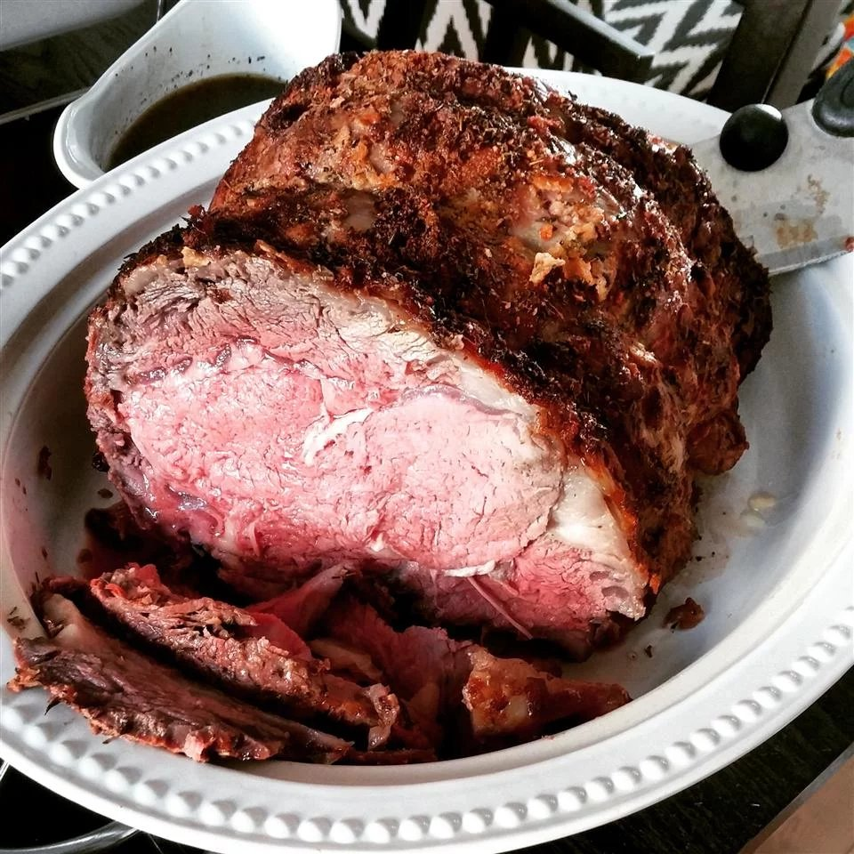

Prime Rib

Succulent, medium-rare, and tender, this prime rib melts in your mouth. Very easy to make and a Christmas Eve fave.
Steps
- pireheat the oven to 375 degrees F (190 degrees C).
- Fill a large pot with lightly salted water and bring to a rapid boil. Cook egg noodles at a boil until tender yet firm to the bite, 10 to 12 minutes. Drain.
- While the egg noodles are cooking, melt 2 tablespoons butter in a large, oven-safe skillet over medium heat. Add mushrooms, peas, and onion and cook, stirring occasionally, until slightly softened, about 5 minutes. Season with salt, pepper, and cayenne.
- Sprinkle flour over the vegetables; cook and stir for 2 minutes. Add milk and chicken broth and bring to a simmer. Cook until thickened, 2 to 3 minutes. Remove from the heat.
- Add drained egg noodles to the vegetable mixture, along with Cheddar cheese, tuna, 1/4 cup Parmesan cheese, parsley, dill, chives, and lemon juice; stir until well combined.
- Combine remaining 1/4 cup Parmesan with panko and 1 tablespoon melted butter. Sprinkle over the casserole.
- Bake in the preheated oven until golden and bubbly, 17 to 19 minutes.